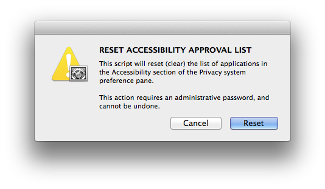
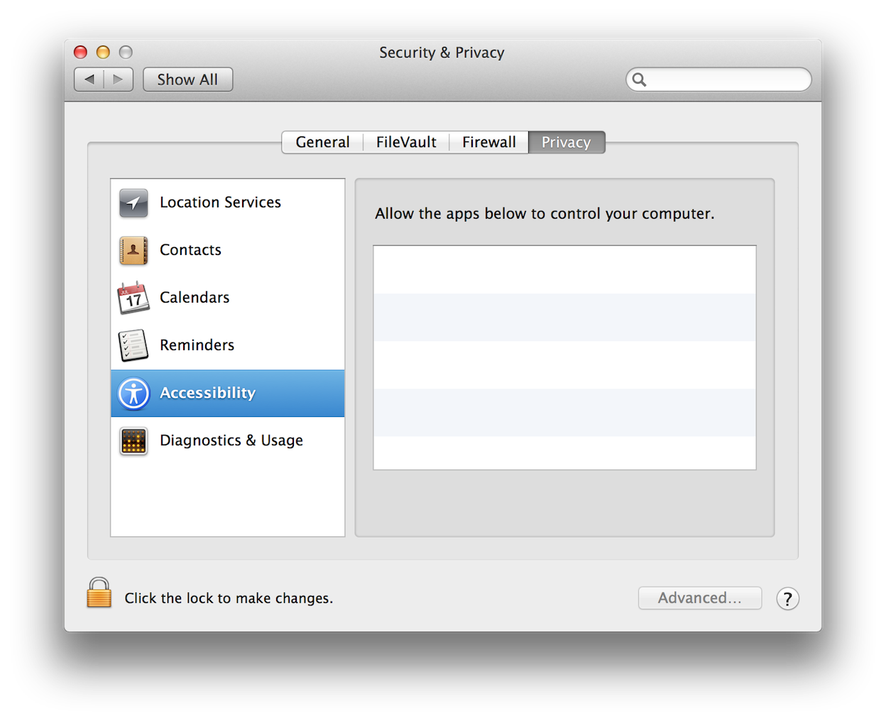
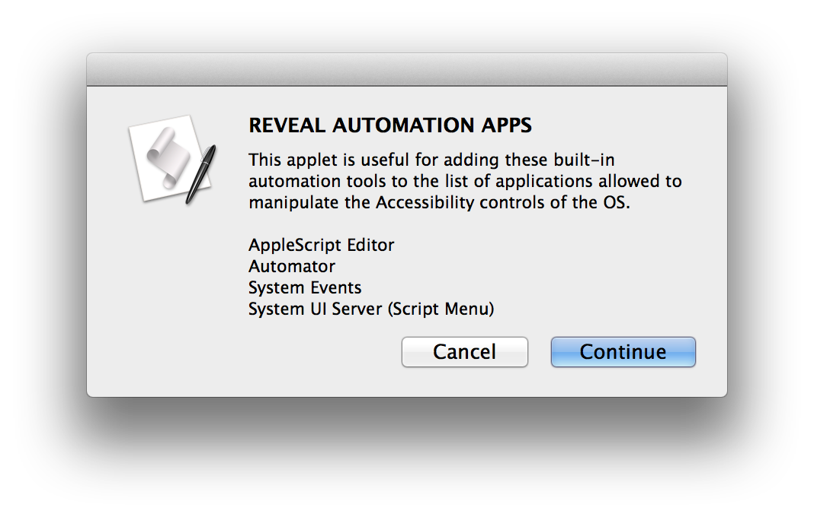
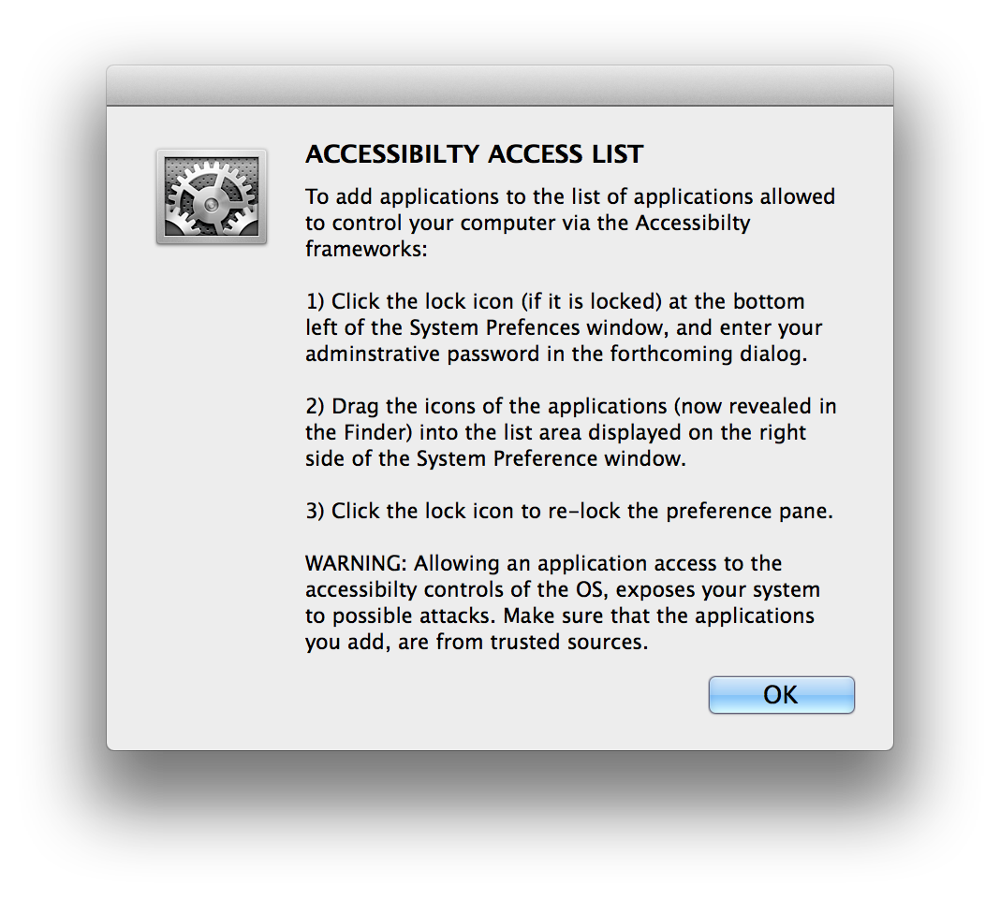
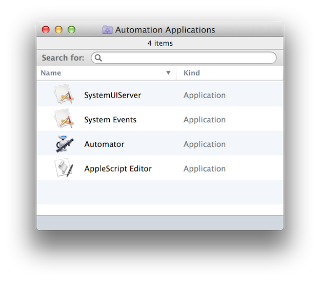
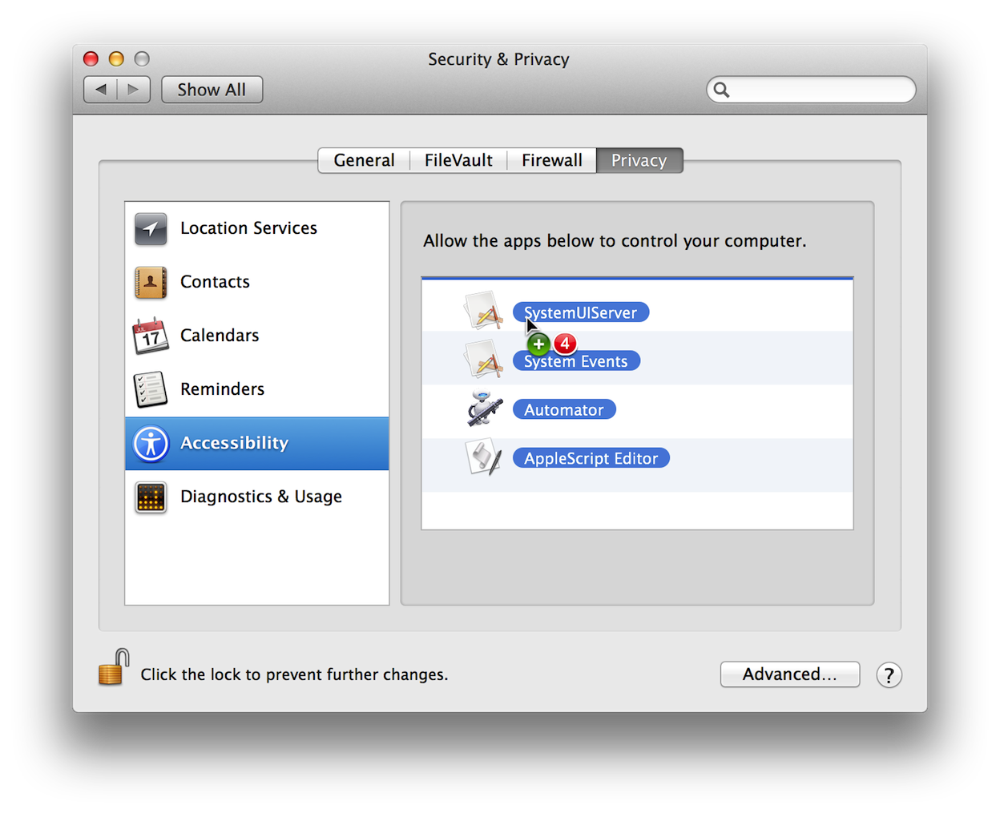

As a script developer, who creates numerous test and example applets, you may find that the Accessibility Access List becomes cluttered with items that are no longer in active use. Since this system preference contains no options for deleting items from the list, you may need to use the tool provided on this page, to reset and clear the list.
IMPORTANT: The Accessibility Access List should only be reset if absolutely necessary. If you’re not sure it is necessary, then don’t reset.
Download and launch the Reset Accessibility List applet.
Once launched, the applet displays the following dialog:

Click the Reset button in the dialog, and the Accessibility Access List will cleared to contain no default items: (⬇ see below)

If you plan on using AppleScript and System Events to query and control the user interface, you’ll want to add the relevant OS automation tools to the accessibility access list. The process of adding an application to the access list, involves the action of dragging the icon of an application into the list view. For security reasons, this must be performed manually by a user with administrative access.
To make it easier to locate, select, and add the built-in OS automation tools, the Setup Automation Accessibility Applet will open the Accessibility section of the Privacy preference pane, and reveal the automation application files on the desktop, ready for you to add to the list.
DO THIS ► Download and run the Setup Automation Accessibility applet.
Upon launching, the applet will display the following dialog, listing the automation applications capable of implementing user-interface (UI) scripting:

DO THIS ►Click the Continue button and the applet will open the System Preferences application and display the following dialog:

Click the OK button in the dialog (⬆ see above) and a new window containing the icons of the automation applications, will be displayed in the Finder: (⬇ see below)

To add the automation applications to the Accessibility Access List, select the applications in the Finder window, and drag their icons into system preferences window: (⬇ see below)

Release the cursor press, and the automation applications will now appear in the Accessibility Access List. The final step, is to secure the preference pane by clicking the lock icon in the lower left of the preferences window: (⬇ see below)